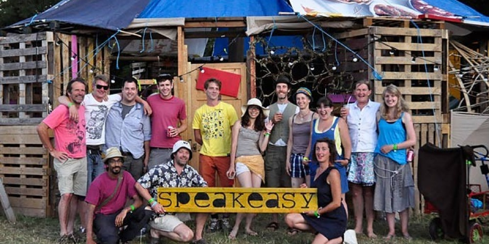
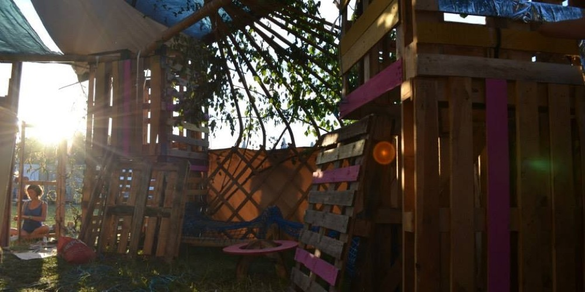
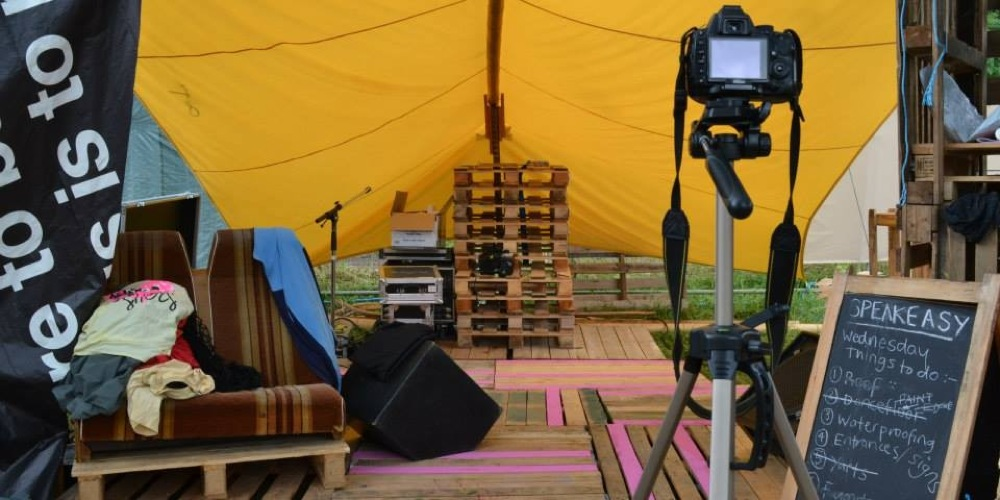
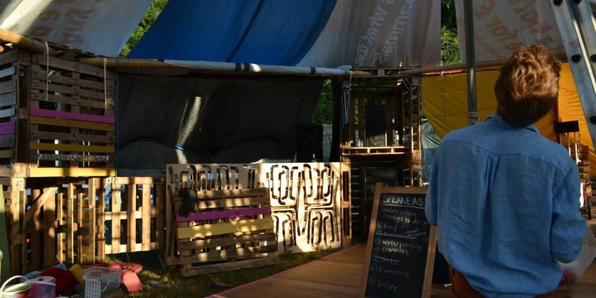
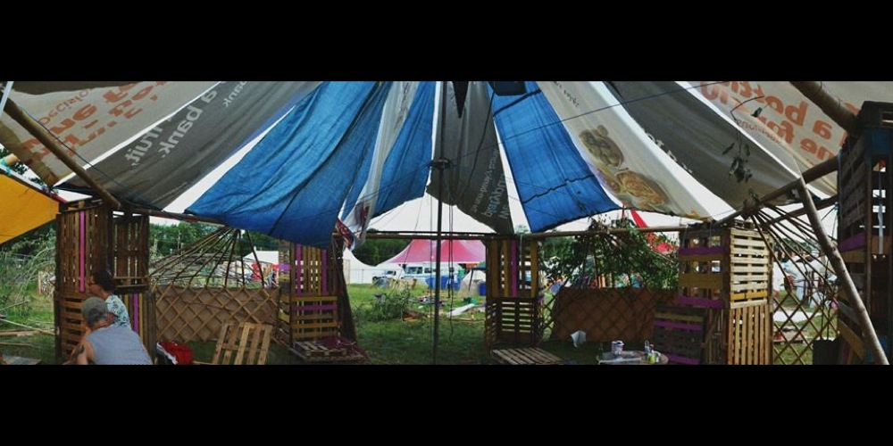
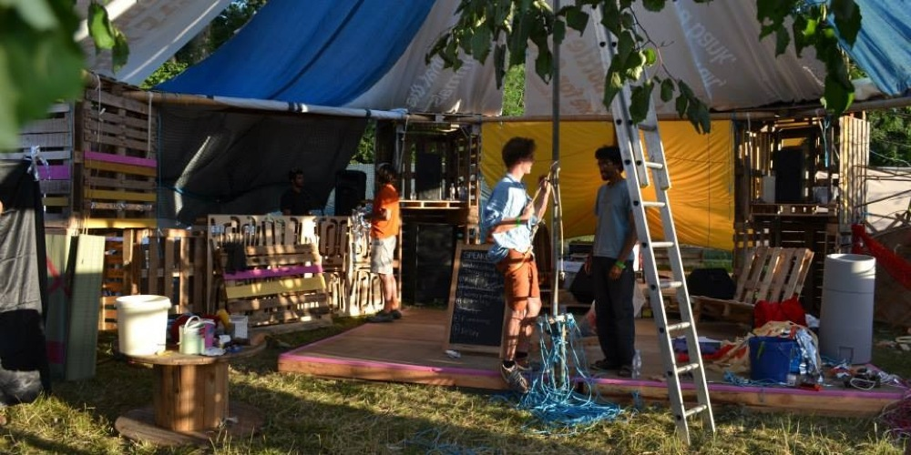
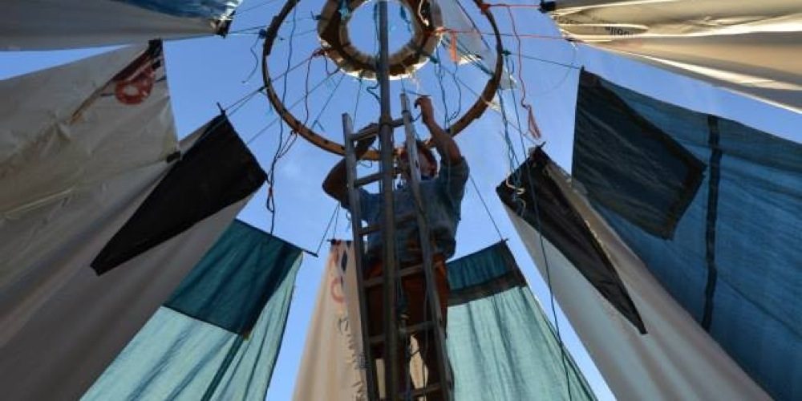

Speakeasy - Roots Architecture
After my time at Heatherwick studios heading over to the Wiltshire countryside to muck around with hay bales, pallets and plastic tarp was a welcome antithesis to the mostly computer based work I had been doing. The participants in the event where divided into four teams. I joined the Arkitrek team composed mostly of students of the Centre for Alternative Technology in Wales.
Available materials and possible design ideas had been discussed via e-mail correspondence in the weeks building up to the event. The structure needed to house talks during the day, and become a music venue in the evening. The main priority was to keep the rain out, to protect the audience and any sensitive electrical equipment.
Despite discussing design ideas for the first couple of days, we didn't stray far from what was initially conceived in the early emails. So we decided to build it right away.We constructed eight towers out of old pallets. Lashed a series of big diameter bamboo to their top outer edges to form a ring beam. Then we erected a central scaffolding pole from which we stretched triangular sections of plastic sheet to the ring beam forming the roof.
It was looking like we where going to be ahead of schedule. This I think is why it was suggested to us by one of the older and wiser staff to spice up or design a little by slightly changing the design of the roof so as to allow it to rotate independently of the main structure, so the whole thing could spin in the wind.
This challenge seemed ridiculous, but the consensus was to attempt it. So attempt it we did. We rebuild the centrally attachment point with wheels and bearings, and made another separate ring beam riding clear of the first onto which we reattached the sheets. The idea was that the weight of the plastic pulling in would be resisted by the circular shape of the second ring beam.
I think it would have worked if we'd had enough materials to make the second ring beam more rigid. Unfortunately it was far too bendy, so instead of resisting the roof load it tended to fold up on itself.
As the storm was approaching we attempted frantically to re-enforce the ring beam but failed to make much difference. Eventually we cut our losses and lashed it down as before.
It was a very ambitious project to take on so late in the construction process. We all knew it was unlikely to succeed. It would have been nice if it had, nevertheless it was an exciting challenging exercise in team building and cooperation, quick decision making, structural engineering which I think we all leaned allot.
